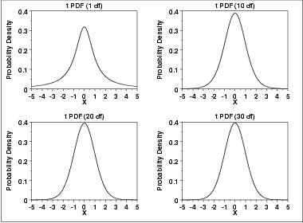
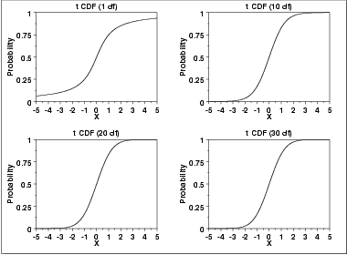
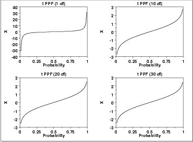

|
1.
Exploratory Data Analysis
1.3. EDA Techniques 1.3.6. Probability Distributions 1.3.6.6. Gallery of Distributions
|
|||||||||||||||||
| Probability Density Function |
The formula for the probability density
function of the t distribution is
\( f(x) = \frac{(1 + \frac{x^2}{\nu})^{\frac{-(\nu + 1)} {2}}} {B(0.5,0.5\nu)\sqrt{\nu}} \) where B is the beta function and ν is a positive integer shape parameter. The formula for the beta function is \( B(\alpha,\beta) = \int_{0}^{1} {t^{\alpha-1}(1-t)^{\beta-1}dt} \) In a testing context, the t distribution is treated as a "standardized distribution" (i.e., no location or scale parameters). However, in a distributional modeling context (as with other probability distributions), the t distribution itself can be transformed with a location parameter, μ, and a scale parameter, σ. The following is the plot of the t probability density function for 4 different values of the shape parameter.  These plots all have a similar shape. The difference is in the heaviness of the tails. In fact, the t distribution with ν equal to 1 is a Cauchy distribution. The t distribution approaches a normal distribution as ν becomes large. The approximation is quite good for values of ν > 30. |
||||||||||||||||
| Cumulative Distribution Function |
The formula for the cumulative distribution
function of the t distribution is complicated and is not
included here. It is given in the
Evans, Hastings, and Peacock
book.
The following are the plots of the t cumulative distribution function with the same values of ν as the pdf plots above.  |
||||||||||||||||
| Percent Point Function |
The formula for the percent point
function of the t distribution does not exist in
a simple closed form. It is computed numerically.
The following are the plots of the t percent point function with the same values of ν as the pdf plots above.  |
||||||||||||||||
| Other Probability Functions | Since the t distribution is typically used to develop hypothesis tests and confidence intervals and rarely for modeling applications, we omit the formulas and plots for the hazard, cumulative hazard, survival, and inverse survival probability functions. | ||||||||||||||||
| Common Statistics |
|
||||||||||||||||
| Parameter Estimation | Since the t distribution is typically used to develop hypothesis tests and confidence intervals and rarely for modeling applications, we omit any discussion of parameter estimation. | ||||||||||||||||
| Comments | The t distribution is used in many cases for the critical regions for hypothesis tests and in determining confidence intervals. The most common example is testing if data are consistent with the assumed process mean. | ||||||||||||||||
| Software | Most general purpose statistical software programs support at least some of the probability functions for the t distribution. | ||||||||||||||||